GaussKronrodRule¶
-
class
GaussKronrodRule(*args)¶ Gauss-Kronrod rule used in the integration algorithm.
Parameters: - myGaussKronrodPair :
GaussKronrodPair It encodes the selected rule.
Available rules:
- GaussKronrodRule.G1K3,
- GaussKronrodRule.G3K7,
- GaussKronrodRule.G7K15,
- GaussKronrodRule.G11K23,
- GaussKronrodRule.G15K31,
- GaussKronrodRule.G25K51.
Notes
The Gauss-Kronrod rules 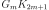 with 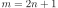 enable to build two approximations of the definite integral 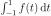 defined by:
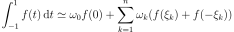
and:

We have 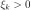, 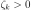, 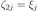, and 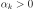.
The rule combines a 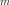-point Gauss rule and a 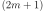-point Kronrod rule (re-using the nodes of the Gauss method). The nodes are defined on 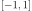 and always contain the node 0 when is odd.
Examples
Create an Gauss-Kronrod rule:
>>> import openturns as ot >>> myRule = ot.GaussKronrodRule(ot.GaussKronrodRule.G15K31)
Methods
getClassName()Accessor to the object’s name. getId()Accessor to the object’s id. getName()Accessor to the object’s name. getOrder()Accessor to parameter. getOtherGaussWeights()Accessor to the weights used in the Gauss approximation. getOtherKronrodNodes()Accessor to the positive nodes used in the Gauss-Kronrod approximation. getOtherKronrodWeights()Accessor to the positive nodes used in the Gauss-Kronrod approximation. getPair()Accessor to pair definig the rule. getShadowedId()Accessor to the object’s shadowed id. getVisibility()Accessor to the object’s visibility state. getZeroGaussWeight()Accessor to the first Gauss weight. getZeroKronrodWeight()Accessor to the first Kronrod weight. hasName()Test if the object is named. hasVisibleName()Test if the object has a distinguishable name. setName(name)Accessor to the object’s name. setShadowedId(id)Accessor to the object’s shadowed id. setVisibility(visible)Accessor to the object’s visibility state. -
__init__(*args)¶ Initialize self. See help(type(self)) for accurate signature.
-
getClassName()¶ Accessor to the object’s name.
Returns: - class_name : str
The object class name (object.__class__.__name__).
-
getId()¶ Accessor to the object’s id.
Returns: - id : int
Internal unique identifier.
-
getName()¶ Accessor to the object’s name.
Returns: - name : str
The name of the object.
-
getOrder()¶ Accessor to parameter.
Returns: - m : int
The number of points used for the Gauss approximation.
-
getOtherGaussWeights()¶ Accessor to the weights used in the Gauss approximation.
Returns: - otherGaussWeights :
Point The weights 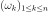
- otherGaussWeights :
-
getOtherKronrodNodes()¶ Accessor to the positive nodes used in the Gauss-Kronrod approximation.
Returns: - otherKronrodNodes :
Point The positive nodes
 It contains the positive Gauss nodes as we have .
It contains the positive Gauss nodes as we have .
- otherKronrodNodes :
-
getOtherKronrodWeights()¶ Accessor to the positive nodes used in the Gauss-Kronrod approximation.
Returns: - otherKronrodWeights :
Point The weights 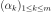.
- otherKronrodWeights :
-
getPair()¶ Accessor to pair definig the rule.
Returns: - gkPair :
GaussKronrodPair Id of the Gauss-Kronrod rule.
- gkPair :
-
getShadowedId()¶ Accessor to the object’s shadowed id.
Returns: - id : int
Internal unique identifier.
-
getVisibility()¶ Accessor to the object’s visibility state.
Returns: - visible : bool
Visibility flag.
-
getZeroGaussWeight()¶ Accessor to the first Gauss weight.
Returns: - zeroKronrodWeight : float
The first weight 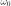.
-
getZeroKronrodWeight()¶ Accessor to the first Kronrod weight.
Returns: - zeroKronrodWeight : float
The first weight 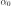.
-
hasName()¶ Test if the object is named.
Returns: - hasName : bool
True if the name is not empty.
-
hasVisibleName()¶ Test if the object has a distinguishable name.
Returns: - hasVisibleName : bool
True if the name is not empty and not the default one.
-
setName(name)¶ Accessor to the object’s name.
Parameters: - name : str
The name of the object.
-
setShadowedId(id)¶ Accessor to the object’s shadowed id.
Parameters: - id : int
Internal unique identifier.
-
setVisibility(visible)¶ Accessor to the object’s visibility state.
Parameters: - visible : bool
Visibility flag.
- myGaussKronrodPair :